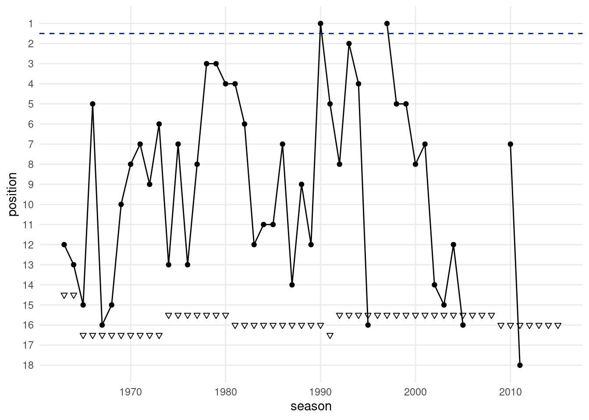
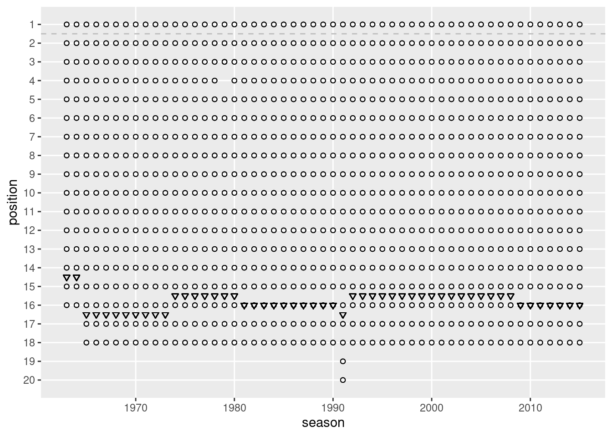
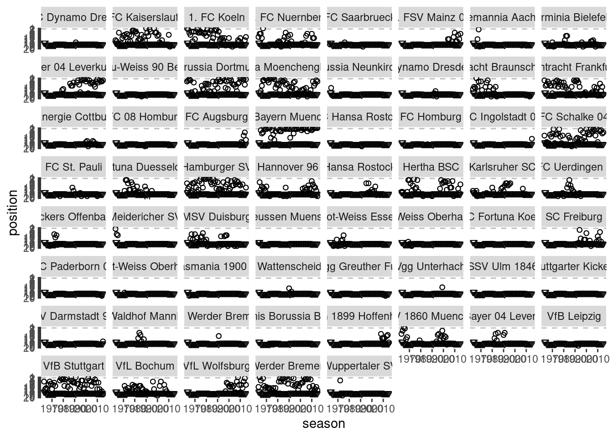
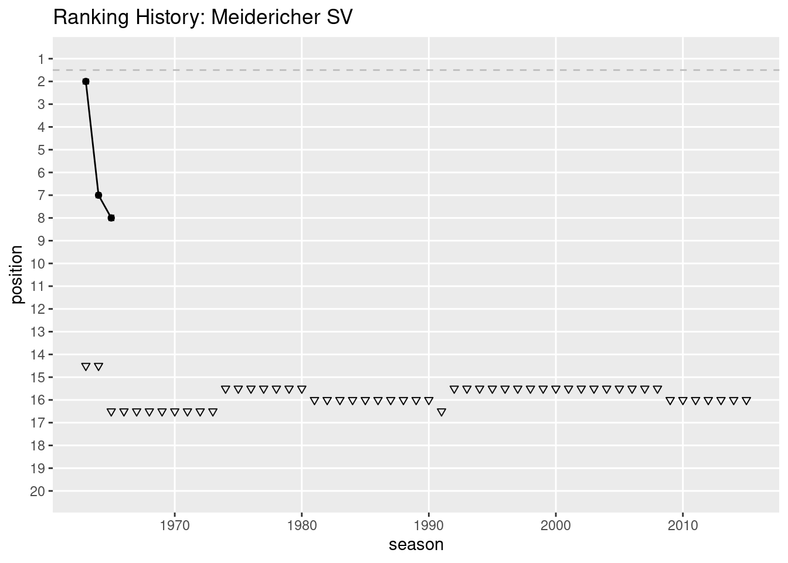

21 Script: bundesliga.R
# In dfb.R I analyze German soccer results
# set working directory
# setwd("~/Dropbox/hsf/23-ws/dsda/scripts")
# clear environment
rm(list = ls())
# (Install and) load packagages
if (!require(pacman)) install.packages("pacman")
pacman::p_load(
bundesligR,
tidyverse
)
# Read in the data as tibble
liga <- as_tibble(bundesligR)
# --------------------------------------
# !!! ERRORS / ISSUES:
# "Borussia Moenchengladbach" is also entitled "Bor. Moenchengladbach"!
# Leverkusen is falsly entitled "SV Bayer 04 Leverkusen"
# Uerdingen has changed its name several times
# Stuttgarter Kickers are named differently
# How often is "Bor. Moenchengladbach" in the data?
sum(liga$Team == "Bor. Moenchengladbach")## [1] 2## # A tibble: 2 × 12
## Season Position Team Played W D L GF GA GD Points Pts_pre_95
## <dbl> <dbl> <chr> <dbl> <dbl> <dbl> <dbl> <dbl> <dbl> <dbl> <dbl> <dbl>
## 1 1989 15 Bor. Moenchengladbach 34 11 8 15 37 45 -8 41 30
## 2 1976 1 Bor. Moenchengladbach 34 17 10 7 58 34 24 61 44# Replace "Bor. Moenchengladbach" with "Borussia Moenchengladbach"
liga <- liga |>
mutate(Team = ifelse(Team == "Bor. Moenchengladbach",
"Borussia Moenchengladbach",
Team)) |>
mutate(Team = ifelse(Team == "SV Bayer 04 Leverkusen",
"TSV Bayer 04 Leverkusen",
Team)) |>
mutate(Team = ifelse(Team == "FC Bayer 05 Uerdingen"
| Team == "Bayer 05 Uerdingen" ,
"KFC Uerdingen 05",
Team)) |>
mutate(Team = ifelse(Team == "SV Stuttgarter Kickers",
"Stuttgarter Kickers",
Team))
# ------------------------------------
# Check for the data class
class(liga)## [1] "tbl_df" "tbl" "data.frame"## Rows: 952
## Columns: 12
## $ Season <dbl> 2015, 2015, 2015, 2015, 2015, 2015, 2015, 2015, 2015, 2015, 2015, 2015, 2015, 2015, 2015, 2015, 2015, 2015, 2014, 2014,…
## $ Position <dbl> 1, 2, 3, 4, 5, 6, 7, 8, 9, 10, 11, 12, 13, 14, 15, 16, 17, 18, 1, 2, 3, 4, 5, 6, 7, 8, 9, 10, 11, 12, 13, 14, 15, 16, 1…
## $ Team <chr> "FC Bayern Muenchen", "Borussia Dortmund", "Bayer 04 Leverkusen", "Borussia Moenchengladbach", "FC Schalke 04", "1. FSV…
## $ Played <dbl> 34, 34, 34, 34, 34, 34, 34, 34, 34, 34, 34, 34, 34, 34, 34, 34, 34, 34, 34, 34, 34, 34, 34, 34, 34, 34, 34, 34, 34, 34,…
## $ W <dbl> 28, 24, 18, 17, 15, 14, 14, 12, 10, 11, 10, 9, 10, 9, 9, 9, 9, 7, 25, 20, 19, 17, 15, 13, 13, 12, 11, 11, 9, 9, 9, 9, 9…
## $ D <dbl> 4, 6, 6, 4, 7, 8, 8, 9, 13, 8, 10, 11, 8, 11, 10, 9, 6, 4, 4, 9, 9, 10, 4, 9, 7, 8, 10, 10, 13, 13, 10, 9, 8, 8, 13, 10…
## $ L <dbl> 2, 4, 10, 13, 12, 12, 12, 13, 11, 15, 14, 14, 16, 14, 15, 16, 19, 23, 5, 5, 6, 7, 15, 12, 14, 14, 13, 13, 12, 12, 15, 1…
## $ GF <dbl> 80, 82, 56, 67, 51, 46, 42, 47, 38, 40, 33, 42, 50, 38, 39, 34, 50, 31, 80, 72, 53, 62, 43, 42, 47, 49, 56, 50, 45, 34,…
## $ GA <dbl> 17, 34, 40, 50, 49, 42, 42, 49, 42, 46, 42, 52, 65, 53, 54, 52, 75, 62, 18, 38, 26, 37, 43, 40, 42, 55, 62, 65, 47, 40,…
## $ GD <dbl> 63, 48, 16, 17, 2, 4, 0, -2, -4, -6, -9, -10, -15, -15, -15, -18, -25, -31, 62, 34, 27, 25, 0, 2, 5, -6, -6, -15, -2, -…
## $ Points <dbl> 88, 78, 60, 55, 52, 50, 50, 45, 43, 41, 40, 38, 38, 38, 37, 36, 33, 25, 79, 69, 66, 61, 49, 48, 46, 44, 43, 43, 40, 40,…
## $ Pts_pre_95 <dbl> 60, 54, 42, 38, 37, 36, 36, 33, 33, 30, 30, 29, 28, 29, 28, 27, 24, 18, 54, 49, 47, 44, 34, 35, 33, 32, 32, 32, 31, 31,…## # A tibble: 6 × 12
## Season Position Team Played W D L GF GA GD Points Pts_pre_95
## <dbl> <dbl> <chr> <dbl> <dbl> <dbl> <dbl> <dbl> <dbl> <dbl> <dbl> <dbl>
## 1 2015 1 FC Bayern Muenchen 34 28 4 2 80 17 63 88 60
## 2 2015 2 Borussia Dortmund 34 24 6 4 82 34 48 78 54
## 3 2015 3 Bayer 04 Leverkusen 34 18 6 10 56 40 16 60 42
## 4 2015 4 Borussia Moenchengladbach 34 17 4 13 67 50 17 55 38
## 5 2015 5 FC Schalke 04 34 15 7 12 51 49 2 52 37
## 6 2015 6 1. FSV Mainz 05 34 14 8 12 46 42 4 50 36## # A tibble: 6 × 12
## Season Position Team Played W D L GF GA GD Points Pts_pre_95
## <dbl> <dbl> <chr> <dbl> <dbl> <dbl> <dbl> <dbl> <dbl> <dbl> <dbl> <dbl>
## 1 1963 11 Eintracht Braunschweig 30 11 6 13 36 49 -13 39 28
## 2 1963 12 1. FC Kaiserslautern 30 10 6 14 48 69 -21 36 26
## 3 1963 13 Karlsruher SC 30 8 8 14 42 55 -13 32 24
## 4 1963 14 Hertha BSC 30 9 6 15 45 65 -20 33 24
## 5 1963 15 Preussen Muenster 30 7 9 14 34 52 -18 30 23
## 6 1963 16 1. FC Saarbruecken 30 6 5 19 44 72 -28 23 17## Season Position Team Played W D L GF
## Min. :1963 Min. : 1.000 Length:952 Min. :30.00 Min. : 2.00 Min. : 2.000 Min. : 1.00 Min. : 15.00
## 1st Qu.:1976 1st Qu.: 5.000 Class :character 1st Qu.:34.00 1st Qu.: 9.75 1st Qu.: 7.000 1st Qu.:10.00 1st Qu.: 42.00
## Median :1989 Median : 9.000 Mode :character Median :34.00 Median :12.00 Median : 9.000 Median :13.00 Median : 50.00
## Mean :1989 Mean : 9.486 Mean :33.95 Mean :12.61 Mean : 8.733 Mean :12.61 Mean : 52.01
## 3rd Qu.:2002 3rd Qu.:14.000 3rd Qu.:34.00 3rd Qu.:15.00 3rd Qu.:11.000 3rd Qu.:15.00 3rd Qu.: 61.00
## Max. :2015 Max. :20.000 Max. :38.00 Max. :29.00 Max. :18.000 Max. :28.00 Max. :101.00
## GA GD Points Pts_pre_95
## Min. :10.0 Min. :-60.0000 Min. :10.00 Min. : 8.00
## 1st Qu.:43.0 1st Qu.:-13.0000 1st Qu.:38.00 1st Qu.:29.00
## Median :51.0 Median : -2.0000 Median :44.00 Median :33.00
## Mean :51.7 Mean : 0.3015 Mean :46.56 Mean :33.95
## 3rd Qu.:60.0 3rd Qu.: 13.0000 3rd Qu.:55.00 3rd Qu.:39.00
## Max. :93.0 Max. : 80.0000 Max. :91.00 Max. :62.00##
## 1963 1964 1965 1966 1967 1968 1969 1970 1971 1972 1973 1974 1975 1976 1977 1978 1979 1980 1981 1982 1983 1984 1985 1986 1987 1988 1989 1990
## 16 16 18 18 18 18 18 18 18 18 18 18 18 18 18 18 18 18 18 18 18 18 18 18 18 18 18 18
## 1991 1992 1993 1994 1995 1996 1997 1998 1999 2000 2001 2002 2003 2004 2005 2006 2007 2008 2009 2010 2011 2012 2013 2014 2015
## 20 18 18 18 18 18 18 18 18 18 18 18 18 18 18 18 18 18 18 18 18 18 18 18 18## [1] "FC Bayern Muenchen" "Borussia Dortmund" "Bayer 04 Leverkusen" "Borussia Moenchengladbach"
## [5] "FC Schalke 04" "1. FSV Mainz 05" "Hertha BSC" "VfL Wolfsburg"
## [9] "1. FC Koeln" "Hamburger SV" "FC Ingolstadt 04" "FC Augsburg"
## [13] "Werder Bremen" "SV Darmstadt 98" "TSG 1899 Hoffenheim" "Eintracht Frankfurt"
## [17] "VfB Stuttgart" "Hannover 96" "SC Freiburg" "SC Paderborn 07"
## [21] "1. FC Nuernberg" "Eintracht Braunschweig" "Fortuna Duesseldorf" "SpVgg Greuther Fuerth"
## [25] "1. FC Kaiserslautern" "FC St. Pauli" "VfL Bochum" "Energie Cottbus"
## [29] "Karlsruher SC" "Arminia Bielefeld" "Hansa Rostock" "MSV Duisburg"
## [33] "Alemannia Aachen" "TSV 1860 Muenchen" "SpVgg Unterhaching" "SSV Ulm 1846"
## [37] "KFC Uerdingen 05" "Dynamo Dresden" "SG Wattenscheid 09" "VfB Leipzig"
## [41] "1. FC Saarbruecken" "TSV Bayer 04 Leverkusen" "SV Werder Bremen" "1. FC Dynamo Dresden"
## [45] "Stuttgarter Kickers" "FC Hansa Rostock" "SV Waldhof Mannheim" "FC 08 Homburg"
## [49] "FC Homburg" "Blau-Weiss 90 Berlin" "Kickers Offenbach" "Tennis Borussia Berlin"
## [53] "Rot-Weiss Essen" "Wuppertaler SV" "SC Fortuna Koeln" "Rot-Weiss Oberhausen"
## [57] "SC Rot-Weiss Oberhausen" "Borussia Neunkirchen" "Meidericher SV" "SC Tasmania 1900 Berlin"
## [61] "Preussen Muenster"## [1] 61##
## 1. FC Dynamo Dresden 1. FC Kaiserslautern 1. FC Koeln 1. FC Nuernberg 1. FC Saarbruecken
## 1 44 45 32 5
## 1. FSV Mainz 05 Alemannia Aachen Arminia Bielefeld Bayer 04 Leverkusen Blau-Weiss 90 Berlin
## 10 4 17 30 1
## Borussia Dortmund Borussia Moenchengladbach Borussia Neunkirchen Dynamo Dresden Eintracht Braunschweig
## 49 48 3 3 21
## Eintracht Frankfurt Energie Cottbus FC 08 Homburg FC Augsburg FC Bayern Muenchen
## 47 6 2 5 51
## FC Hansa Rostock FC Homburg FC Ingolstadt 04 FC Schalke 04 FC St. Pauli
## 1 1 1 48 8
## Fortuna Duesseldorf Hamburger SV Hannover 96 Hansa Rostock Hertha BSC
## 23 53 28 11 33
## Karlsruher SC KFC Uerdingen 05 Kickers Offenbach Meidericher SV MSV Duisburg
## 24 14 7 3 25
## Preussen Muenster Rot-Weiss Essen Rot-Weiss Oberhausen SC Fortuna Koeln SC Freiburg
## 1 7 3 1 16
## SC Paderborn 07 SC Rot-Weiss Oberhausen SC Tasmania 1900 Berlin SG Wattenscheid 09 SpVgg Greuther Fuerth
## 1 1 1 4 1
## SpVgg Unterhaching SSV Ulm 1846 Stuttgarter Kickers SV Darmstadt 98 SV Waldhof Mannheim
## 2 1 2 3 7
## SV Werder Bremen Tennis Borussia Berlin TSG 1899 Hoffenheim TSV 1860 Muenchen TSV Bayer 04 Leverkusen
## 1 2 8 20 7
## VfB Leipzig VfB Stuttgart VfL Bochum VfL Wolfsburg Werder Bremen
## 1 51 34 19 51
## Wuppertaler SV
## 3## Min. 1st Qu. Median Mean 3rd Qu. Max.
## 1963 1976 1989 1989 2002 2015# summary of numeric of variables (Team is a character)
liga |>
select(Season, Position, Played, W, D, L, GF, GA, GD, Points, Pts_pre_95) |>
summary()## Season Position Played W D L GF GA
## Min. :1963 Min. : 1.000 Min. :30.00 Min. : 2.00 Min. : 2.000 Min. : 1.00 Min. : 15.00 Min. :10.0
## 1st Qu.:1976 1st Qu.: 5.000 1st Qu.:34.00 1st Qu.: 9.75 1st Qu.: 7.000 1st Qu.:10.00 1st Qu.: 42.00 1st Qu.:43.0
## Median :1989 Median : 9.000 Median :34.00 Median :12.00 Median : 9.000 Median :13.00 Median : 50.00 Median :51.0
## Mean :1989 Mean : 9.486 Mean :33.95 Mean :12.61 Mean : 8.733 Mean :12.61 Mean : 52.01 Mean :51.7
## 3rd Qu.:2002 3rd Qu.:14.000 3rd Qu.:34.00 3rd Qu.:15.00 3rd Qu.:11.000 3rd Qu.:15.00 3rd Qu.: 61.00 3rd Qu.:60.0
## Max. :2015 Max. :20.000 Max. :38.00 Max. :29.00 Max. :18.000 Max. :28.00 Max. :101.00 Max. :93.0
## GD Points Pts_pre_95
## Min. :-60.0000 Min. :10.00 Min. : 8.00
## 1st Qu.:-13.0000 1st Qu.:38.00 1st Qu.:29.00
## Median : -2.0000 Median :44.00 Median :33.00
## Mean : 0.3015 Mean :46.56 Mean :33.95
## 3rd Qu.: 13.0000 3rd Qu.:55.00 3rd Qu.:39.00
## Max. : 80.0000 Max. :91.00 Max. :62.00## Season Position Played W D L GF GA
## Min. :1963 Min. : 1.000 Min. :30.00 Min. : 2.00 Min. : 2.000 Min. : 1.00 Min. : 15.00 Min. :10.0
## 1st Qu.:1976 1st Qu.: 5.000 1st Qu.:34.00 1st Qu.: 9.75 1st Qu.: 7.000 1st Qu.:10.00 1st Qu.: 42.00 1st Qu.:43.0
## Median :1989 Median : 9.000 Median :34.00 Median :12.00 Median : 9.000 Median :13.00 Median : 50.00 Median :51.0
## Mean :1989 Mean : 9.486 Mean :33.95 Mean :12.61 Mean : 8.733 Mean :12.61 Mean : 52.01 Mean :51.7
## 3rd Qu.:2002 3rd Qu.:14.000 3rd Qu.:34.00 3rd Qu.:15.00 3rd Qu.:11.000 3rd Qu.:15.00 3rd Qu.: 61.00 3rd Qu.:60.0
## Max. :2015 Max. :20.000 Max. :38.00 Max. :29.00 Max. :18.000 Max. :28.00 Max. :101.00 Max. :93.0
## GD Points Pts_pre_95
## Min. :-60.0000 Min. :10.00 Min. : 8.00
## 1st Qu.:-13.0000 1st Qu.:38.00 1st Qu.:29.00
## Median : -2.0000 Median :44.00 Median :33.00
## Mean : 0.3015 Mean :46.56 Mean :33.95
## 3rd Qu.: 13.0000 3rd Qu.:55.00 3rd Qu.:39.00
## Max. : 80.0000 Max. :91.00 Max. :62.00# shortest alternative
liga |>
select(-Team) |>
filter(Season == 1999 | Season == 2010) |>
summary()## Season Position Played W D L GF GA
## Min. :1999 Min. : 1.0 Min. :34 Min. : 4.00 Min. : 3.000 Min. : 3.00 Min. :31.00 Min. :22.00
## 1st Qu.:1999 1st Qu.: 5.0 1st Qu.:34 1st Qu.: 9.75 1st Qu.: 6.000 1st Qu.:10.75 1st Qu.:41.00 1st Qu.:44.00
## Median :2004 Median : 9.5 Median :34 Median :12.00 Median : 8.000 Median :13.00 Median :47.00 Median :48.50
## Mean :2004 Mean : 9.5 Mean :34 Mean :12.83 Mean : 8.333 Mean :12.83 Mean :49.42 Mean :49.42
## 3rd Qu.:2010 3rd Qu.:14.0 3rd Qu.:34 3rd Qu.:14.25 3rd Qu.:10.250 3rd Qu.:16.00 3rd Qu.:54.25 3rd Qu.:59.00
## Max. :2010 Max. :18.0 Max. :34 Max. :23.00 Max. :15.000 Max. :21.00 Max. :81.00 Max. :71.00
## GD Points Pts_pre_95
## Min. :-34.00 Min. :22.00 Min. :18.00
## 1st Qu.:-10.25 1st Qu.:39.75 1st Qu.:29.75
## Median : -3.00 Median :44.00 Median :32.00
## Mean : 0.00 Mean :46.83 Mean :34.00
## 3rd Qu.: 4.75 3rd Qu.:50.75 3rd Qu.:37.50
## Max. : 45.00 Max. :75.00 Max. :52.00## # A tibble: 1 × 12
## Season Position Team Played W D L GF GA GD Points Pts_pre_95
## <dbl> <dbl> <chr> <dbl> <dbl> <dbl> <dbl> <dbl> <dbl> <dbl> <dbl> <dbl>
## 1 2012 1 FC Bayern Muenchen 34 29 4 1 98 18 80 91 62## # A tibble: 1 × 1
## Team
## <chr>
## 1 FC Bayern Muenchen# remove the variable `Pts_pre_95` from the data
liga_post95 <- liga |>
select(-Pts_pre_95)
# rename W, D, and L to Win, Draw, and Loss
# additionally rename GF, GA, GD to Goals_shot, Goals_received, Goal_difference
liga_longnames <- liga |>
rename(Win = W, Draw = D, Loss = L) |>
rename(Goals_shot = GF, Goals_received = GA, Goal_difference = GD)
# Remove the variable `Pts_pre_95` from `liga`
# additionally remove all observations before the year 1996
liga_no3point <- liga |>
select(-Pts_pre_95) |>
filter(Season >= 1996)
# Remove the objects liga_post95, liga_longnames, and liga_no3point from the environment
rm(liga_post95, liga_longnames, liga_no3point)
# Rename all variables of `liga`to lower cases and store it as `dfb`
dfb <- liga |>
rename_all(tolower)
# Show the winner and the runner up after 2010
# additionally show the points
dfb |>
filter(season > 2010) |>
group_by(season) |>
arrange(desc(points)) %>%
slice_head(n = 2) %>%
select(team, points, position)## Adding missing grouping variables: `season`## # A tibble: 10 × 4
## # Groups: season [5]
## season team points position
## <dbl> <chr> <dbl> <dbl>
## 1 2011 Borussia Dortmund 81 1
## 2 2011 FC Bayern Muenchen 73 2
## 3 2012 FC Bayern Muenchen 91 1
## 4 2012 Borussia Dortmund 66 2
## 5 2013 FC Bayern Muenchen 90 1
## 6 2013 Borussia Dortmund 71 2
## 7 2014 FC Bayern Muenchen 79 1
## 8 2014 VfL Wolfsburg 69 2
## 9 2015 FC Bayern Muenchen 88 1
## 10 2015 Borussia Dortmund 78 2# Create a variable that counts how often a team was ranked first
dfb <- dfb |>
group_by(team) |>
mutate(meister_count = sum(position == 1))
# How often has each team played in the Bundesliga
table(liga$Team)##
## 1. FC Dynamo Dresden 1. FC Kaiserslautern 1. FC Koeln 1. FC Nuernberg 1. FC Saarbruecken
## 1 44 45 32 5
## 1. FSV Mainz 05 Alemannia Aachen Arminia Bielefeld Bayer 04 Leverkusen Blau-Weiss 90 Berlin
## 10 4 17 30 1
## Borussia Dortmund Borussia Moenchengladbach Borussia Neunkirchen Dynamo Dresden Eintracht Braunschweig
## 49 48 3 3 21
## Eintracht Frankfurt Energie Cottbus FC 08 Homburg FC Augsburg FC Bayern Muenchen
## 47 6 2 5 51
## FC Hansa Rostock FC Homburg FC Ingolstadt 04 FC Schalke 04 FC St. Pauli
## 1 1 1 48 8
## Fortuna Duesseldorf Hamburger SV Hannover 96 Hansa Rostock Hertha BSC
## 23 53 28 11 33
## Karlsruher SC KFC Uerdingen 05 Kickers Offenbach Meidericher SV MSV Duisburg
## 24 14 7 3 25
## Preussen Muenster Rot-Weiss Essen Rot-Weiss Oberhausen SC Fortuna Koeln SC Freiburg
## 1 7 3 1 16
## SC Paderborn 07 SC Rot-Weiss Oberhausen SC Tasmania 1900 Berlin SG Wattenscheid 09 SpVgg Greuther Fuerth
## 1 1 1 4 1
## SpVgg Unterhaching SSV Ulm 1846 Stuttgarter Kickers SV Darmstadt 98 SV Waldhof Mannheim
## 2 1 2 3 7
## SV Werder Bremen Tennis Borussia Berlin TSG 1899 Hoffenheim TSV 1860 Muenchen TSV Bayer 04 Leverkusen
## 1 2 8 20 7
## VfB Leipzig VfB Stuttgart VfL Bochum VfL Wolfsburg Werder Bremen
## 1 51 34 19 51
## Wuppertaler SV
## 3# Make a ranking
dfb |>
group_by(team) |>
summarise(appearances = n_distinct(season)) |>
arrange(desc(appearances)) |>
print(n = Inf)## # A tibble: 61 × 2
## team appearances
## <chr> <int>
## 1 Hamburger SV 53
## 2 FC Bayern Muenchen 51
## 3 VfB Stuttgart 51
## 4 Werder Bremen 51
## 5 Borussia Dortmund 49
## 6 Borussia Moenchengladbach 48
## 7 FC Schalke 04 48
## 8 Eintracht Frankfurt 47
## 9 1. FC Koeln 45
## 10 1. FC Kaiserslautern 44
## 11 VfL Bochum 34
## 12 Hertha BSC 33
## 13 1. FC Nuernberg 32
## 14 Bayer 04 Leverkusen 30
## 15 Hannover 96 28
## 16 MSV Duisburg 25
## 17 Karlsruher SC 24
## 18 Fortuna Duesseldorf 23
## 19 Eintracht Braunschweig 21
## 20 TSV 1860 Muenchen 20
## 21 VfL Wolfsburg 19
## 22 Arminia Bielefeld 17
## 23 SC Freiburg 16
## 24 KFC Uerdingen 05 14
## 25 Hansa Rostock 11
## 26 1. FSV Mainz 05 10
## 27 FC St. Pauli 8
## 28 TSG 1899 Hoffenheim 8
## 29 Kickers Offenbach 7
## 30 Rot-Weiss Essen 7
## 31 SV Waldhof Mannheim 7
## 32 TSV Bayer 04 Leverkusen 7
## 33 Energie Cottbus 6
## 34 1. FC Saarbruecken 5
## 35 FC Augsburg 5
## 36 Alemannia Aachen 4
## 37 SG Wattenscheid 09 4
## 38 Borussia Neunkirchen 3
## 39 Dynamo Dresden 3
## 40 Meidericher SV 3
## 41 Rot-Weiss Oberhausen 3
## 42 SV Darmstadt 98 3
## 43 Wuppertaler SV 3
## 44 FC 08 Homburg 2
## 45 SpVgg Unterhaching 2
## 46 Stuttgarter Kickers 2
## 47 Tennis Borussia Berlin 2
## 48 1. FC Dynamo Dresden 1
## 49 Blau-Weiss 90 Berlin 1
## 50 FC Hansa Rostock 1
## 51 FC Homburg 1
## 52 FC Ingolstadt 04 1
## 53 Preussen Muenster 1
## 54 SC Fortuna Koeln 1
## 55 SC Paderborn 07 1
## 56 SC Rot-Weiss Oberhausen 1
## 57 SC Tasmania 1900 Berlin 1
## 58 SSV Ulm 1846 1
## 59 SV Werder Bremen 1
## 60 SpVgg Greuther Fuerth 1
## 61 VfB Leipzig 1# Add a variable to `dfb` that contains the number of appearances of a team in the league
dfb <- dfb |>
group_by(team) |>
mutate(appearances = n_distinct(season))
# create a number that indicates how often a team has played Bundesliga in a given year
dfb <- dfb |>
arrange(team, season) |>
group_by(team) |>
mutate(team_in_liga_count = row_number())
# Make a ranking with the number of titles of all teams that ever won the league
dfb |>
filter(team_in_liga_count == 1) |>
filter(meister_count != 0) |>
arrange(desc(meister_count)) |>
select(meister_count, team)## # A tibble: 12 × 2
## # Groups: team [12]
## meister_count team
## <int> <chr>
## 1 25 FC Bayern Muenchen
## 2 5 Borussia Dortmund
## 3 5 Borussia Moenchengladbach
## 4 4 Werder Bremen
## 5 3 Hamburger SV
## 6 3 VfB Stuttgart
## 7 2 1. FC Kaiserslautern
## 8 2 1. FC Koeln
## 9 1 1. FC Nuernberg
## 10 1 Eintracht Braunschweig
## 11 1 TSV 1860 Muenchen
## 12 1 VfL Wolfsburg# Create a numeric identifying variable for each team
dfb_teamid <- dfb |>
mutate(team_id = as.numeric(factor(team)))
# When a team is in the league, what is the probability that it wins the league
dfb |>
filter(team_in_liga_count == 1) |>
mutate(prob_win = meister_count/appearances) |>
filter(prob_win > 0) |>
arrange(desc(prob_win)) |>
select(meister_count, prob_win, team)## # A tibble: 12 × 3
## # Groups: team [12]
## meister_count prob_win team
## <int> <dbl> <chr>
## 1 25 0.490 FC Bayern Muenchen
## 2 5 0.104 Borussia Moenchengladbach
## 3 5 0.102 Borussia Dortmund
## 4 4 0.0784 Werder Bremen
## 5 3 0.0588 VfB Stuttgart
## 6 3 0.0566 Hamburger SV
## 7 1 0.0526 VfL Wolfsburg
## 8 1 0.05 TSV 1860 Muenchen
## 9 1 0.0476 Eintracht Braunschweig
## 10 2 0.0455 1. FC Kaiserslautern
## 11 2 0.0444 1. FC Koeln
## 12 1 0.0312 1. FC Nuernberg# make a scatterplot with points on the y-axis and position on the x-axis
ggplot(dfb, aes(x = position, y = points)) +
geom_point()
# Make a scatterplot with points on the y-axis and position on the x-axis.
# Additionally, only consider seasons with 18 teams and
# add lines that make clear how many points you needed to be placed
# in between rank 2 and 15.
dfb_18 <- dfb |>
group_by(season) |>
mutate(teams_in_league = n_distinct(team)) |>
filter(teams_in_league == 18)
h_1 <- dfb_18 |>
filter(position == 16) |>
mutate(ma = max(points))
max_points_rank_16 <- max(h_1$ma) +1
h_2 <- dfb_18 |>
filter(position == 2) |>
mutate(mb = max(points))
min_points_rank_2 <- max(h_2$mb) + 1
dfb_18 <- dfb_18 |>
mutate(season_category = case_when(
season < 1970 ~ 1,
between(season, 1970, 1979) ~ 2,
between(season, 1980, 1989) ~ 3,
between(season, 1990, 1999) ~ 4,
between(season, 2000, 2009) ~ 5,
between(season, 2010, 2019) ~ 6,
TRUE ~ 7 # Adjust this line based on the actual range of your data
))
ggplot(dfb_18, aes(x = position, y = points)) +
geom_point() +
labs(title = "Scatterplot of Points and Position",
x = "Position",
y = "Points") +
geom_vline(xintercept = c(1.5, 15.5), linetype = "dashed", color = "red") +
geom_hline(yintercept = max_points_rank_16, linetype = "dashed", color = "blue") +
geom_hline(yintercept = min_points_rank_2, linetype = "dashed", color = "blue") +
scale_y_continuous(breaks = c(min_points_rank_2, max_points_rank_16, seq(0, max(dfb_18$points), by = 5))) +
scale_x_continuous(breaks = c(seq(0, max(dfb_18$points), by = 1))) +
theme_classic()
# Remove all objects except liga and dfb
rm(list=setdiff(ls(), c("liga", "dfb")))
# Rank "1. FC Kaiserslautern" over time
dfb_bal <- dfb |>
select(season, team, position) |>
as_tibble() |>
complete(season, team)
table(dfb_bal$team)##
## 1. FC Dynamo Dresden 1. FC Kaiserslautern 1. FC Koeln 1. FC Nuernberg 1. FC Saarbruecken
## 53 53 53 53 53
## 1. FSV Mainz 05 Alemannia Aachen Arminia Bielefeld Bayer 04 Leverkusen Blau-Weiss 90 Berlin
## 53 53 53 53 53
## Borussia Dortmund Borussia Moenchengladbach Borussia Neunkirchen Dynamo Dresden Eintracht Braunschweig
## 53 53 53 53 53
## Eintracht Frankfurt Energie Cottbus FC 08 Homburg FC Augsburg FC Bayern Muenchen
## 53 53 53 53 53
## FC Hansa Rostock FC Homburg FC Ingolstadt 04 FC Schalke 04 FC St. Pauli
## 53 53 53 53 53
## Fortuna Duesseldorf Hamburger SV Hannover 96 Hansa Rostock Hertha BSC
## 53 53 53 53 53
## Karlsruher SC KFC Uerdingen 05 Kickers Offenbach Meidericher SV MSV Duisburg
## 53 53 53 53 53
## Preussen Muenster Rot-Weiss Essen Rot-Weiss Oberhausen SC Fortuna Koeln SC Freiburg
## 53 53 53 53 53
## SC Paderborn 07 SC Rot-Weiss Oberhausen SC Tasmania 1900 Berlin SG Wattenscheid 09 SpVgg Greuther Fuerth
## 53 53 53 53 53
## SpVgg Unterhaching SSV Ulm 1846 Stuttgarter Kickers SV Darmstadt 98 SV Waldhof Mannheim
## 53 53 53 53 53
## SV Werder Bremen Tennis Borussia Berlin TSG 1899 Hoffenheim TSV 1860 Muenchen TSV Bayer 04 Leverkusen
## 53 53 53 53 53
## VfB Leipzig VfB Stuttgart VfL Bochum VfL Wolfsburg Werder Bremen
## 53 53 53 53 53
## Wuppertaler SV
## 53dfb_fck <- dfb_bal |>
filter(team == "1. FC Kaiserslautern")
ggplot(dfb_fck, aes(x = season, y = position)) +
geom_point() +
geom_line() +
scale_y_reverse(breaks = seq(1, 18, by = 1))## Warning: Removed 9 rows containing missing values (`geom_point()`).## Warning: Removed 4 rows containing missing values (`geom_line()`).
# Make the plot nice
# consider different rules for having to leave the league:
dfb_fck <- dfb_fck |>
mutate(godown = ifelse(season <= 1964, 14.5, NA)) |>
mutate(godown = ifelse(season > 1964 & season <= 1973, 16.5, godown)) |>
mutate(godown = ifelse(season > 1973 & season <= 1980, 15.5, godown)) |>
mutate(godown = ifelse(season > 1980 & season <= 1990, 16, godown)) |>
mutate(godown = ifelse(season == 1991, 16.5, godown)) |>
mutate(godown = ifelse(season > 1991 & season <= 2008, 15.5, godown)) |>
mutate(godown = ifelse(season > 2008 , 16, godown))
ggplot(dfb_fck, aes(x = season)) +
geom_point(aes(y = position)) +
geom_line(aes(y = position)) +
geom_point(aes(y = godown), shape = 25) +
scale_y_reverse(breaks = seq(1, 18, by = 1)) +
theme_minimal() +
theme(panel.grid.minor = element_blank()) +
geom_hline(yintercept = 1.5, linetype = "dashed", color = "blue") ## Warning: Removed 9 rows containing missing values (`geom_point()`).
## Removed 4 rows containing missing values (`geom_line()`).
dfb_bal <- dfb_bal |>
mutate(godown = ifelse(season <= 1964, 14.5, NA)) |>
mutate(godown = ifelse(season > 1964 & season <= 1973, 16.5, godown)) |>
mutate(godown = ifelse(season > 1973 & season <= 1980, 15.5, godown)) |>
mutate(godown = ifelse(season > 1980 & season <= 1990, 16, godown)) |>
mutate(godown = ifelse(season == 1991, 16.5, godown)) |>
mutate(godown = ifelse(season > 1991 & season <= 2008, 15.5, godown)) |>
mutate(godown = ifelse(season > 2008 , 16, godown)) |>
mutate(inliga = ifelse(is.na(position), 0, 1))
rank_plot <- ggplot(dfb_bal, aes(x = season)) +
geom_point(aes(y = position), shape = 1) +
# geom_line(aes(y = position)) +
geom_point(aes(y = godown), shape = 25) +
scale_y_reverse(breaks = seq(1, 20, by = 1) , limits = c(20, 1)) +
xlim(1963, 2015) +
theme(panel.grid.minor = element_blank()) +
geom_hline(yintercept = 1.5, linetype = "dashed", color = "gray") +
geom_point(aes(y = position), shape = 1)
rank_plot## Warning: Removed 2281 rows containing missing values (`geom_point()`).## Warning: Removed 2281 rows containing missing values (`geom_point()`).
# !--> in 1979 is a gap! Error?
# No. Reason: two clubs shared the third place.
rank_plot +
facet_wrap(~team)## Warning: Removed 2281 rows containing missing values (`geom_point()`).
## Removed 2281 rows containing missing values (`geom_point()`).
plots <- list()
for (club in unique(dfb_bal$team)) {
dfb_subset <- subset(dfb_bal, team == club)
p <- ggplot(dfb_subset, aes(x = season)) +
geom_point(aes(y = position), shape = 15) +
geom_line(aes(y = position)) +
geom_point(aes(y = godown), shape = 25) +
scale_y_reverse(breaks = seq(1, 20, by = 1) , limits = c(20, 1)) +
xlim(1963, 2015) +
theme(panel.grid.minor = element_blank()) +
geom_hline(yintercept = 1.5, linetype = "dashed", color = "gray") +
geom_point(aes(y = position), shape = 1) +
labs(title = paste("Ranking History:", club))
ggsave(filename=paste("r_",club,".png",sep=""))
plots[[club]] <- p
}## Saving 7 x 5 in image## Warning: Removed 52 rows containing missing values (`geom_point()`).## Warning: Removed 52 rows containing missing values (`geom_line()`).## `geom_line()`: Each group consists of only one observation.
## ℹ Do you need to adjust the group aesthetic?## Warning: Removed 52 rows containing missing values (`geom_point()`).## Saving 7 x 5 in image## Warning: Removed 9 rows containing missing values (`geom_point()`).## Warning: Removed 4 rows containing missing values (`geom_line()`).## Warning: Removed 9 rows containing missing values (`geom_point()`).## Saving 7 x 5 in image## Warning: Removed 8 rows containing missing values (`geom_point()`).## Warning: Removed 8 rows containing missing values (`geom_point()`).## Saving 7 x 5 in image## Warning: Removed 21 rows containing missing values (`geom_point()`).## Warning: Removed 2 rows containing missing values (`geom_line()`).## Warning: Removed 21 rows containing missing values (`geom_point()`).## Saving 7 x 5 in image## Warning: Removed 48 rows containing missing values (`geom_point()`).## Warning: Removed 23 rows containing missing values (`geom_line()`).## Warning: Removed 48 rows containing missing values (`geom_point()`).## Saving 7 x 5 in image## Warning: Removed 43 rows containing missing values (`geom_point()`).## Warning: Removed 41 rows containing missing values (`geom_line()`).## Warning: Removed 43 rows containing missing values (`geom_point()`).## Saving 7 x 5 in image## Warning: Removed 49 rows containing missing values (`geom_point()`).## Warning: Removed 13 rows containing missing values (`geom_line()`).## Warning: Removed 49 rows containing missing values (`geom_point()`).## Saving 7 x 5 in image## Warning: Removed 36 rows containing missing values (`geom_point()`).## Warning: Removed 14 rows containing missing values (`geom_line()`).## Warning: Removed 36 rows containing missing values (`geom_point()`).## Saving 7 x 5 in image## Warning: Removed 23 rows containing missing values (`geom_point()`).## Warning: Removed 16 rows containing missing values (`geom_line()`).## Warning: Removed 23 rows containing missing values (`geom_point()`).## Saving 7 x 5 in image## Warning: Removed 52 rows containing missing values (`geom_point()`).## Warning: Removed 52 rows containing missing values (`geom_line()`).## `geom_line()`: Each group consists of only one observation.
## ℹ Do you need to adjust the group aesthetic?## Warning: Removed 52 rows containing missing values (`geom_point()`).## Saving 7 x 5 in image## Warning: Removed 4 rows containing missing values (`geom_point()`).## Warning: Removed 4 rows containing missing values (`geom_point()`).## Saving 7 x 5 in image## Warning: Removed 5 rows containing missing values (`geom_point()`).## Warning: Removed 2 rows containing missing values (`geom_line()`).## Warning: Removed 5 rows containing missing values (`geom_point()`).## Saving 7 x 5 in image## Warning: Removed 50 rows containing missing values (`geom_point()`).## Warning: Removed 49 rows containing missing values (`geom_line()`).## Warning: Removed 50 rows containing missing values (`geom_point()`).## Saving 7 x 5 in image## Warning: Removed 50 rows containing missing values (`geom_point()`).## Warning: Removed 50 rows containing missing values (`geom_line()`).## Warning: Removed 50 rows containing missing values (`geom_point()`).## Saving 7 x 5 in image## Warning: Removed 32 rows containing missing values (`geom_point()`).## Warning: Removed 2 rows containing missing values (`geom_line()`).## Warning: Removed 32 rows containing missing values (`geom_point()`).## Saving 7 x 5 in image## Warning: Removed 6 rows containing missing values (`geom_point()`).## Warning: Removed 6 rows containing missing values (`geom_point()`).## Saving 7 x 5 in image## Warning: Removed 47 rows containing missing values (`geom_point()`).## Warning: Removed 44 rows containing missing values (`geom_line()`).## Warning: Removed 47 rows containing missing values (`geom_point()`).## Saving 7 x 5 in image## Warning: Removed 51 rows containing missing values (`geom_point()`).## Warning: Removed 50 rows containing missing values (`geom_line()`).## Warning: Removed 51 rows containing missing values (`geom_point()`).## Saving 7 x 5 in image## Warning: Removed 48 rows containing missing values (`geom_point()`).## Warning: Removed 48 rows containing missing values (`geom_line()`).## Warning: Removed 48 rows containing missing values (`geom_point()`).## Saving 7 x 5 in image## Warning: Removed 2 rows containing missing values (`geom_point()`).## Warning: Removed 2 rows containing missing values (`geom_line()`).## Warning: Removed 2 rows containing missing values (`geom_point()`).## Saving 7 x 5 in image## Warning: Removed 52 rows containing missing values (`geom_point()`).## Warning: Removed 52 rows containing missing values (`geom_line()`).## `geom_line()`: Each group consists of only one observation.
## ℹ Do you need to adjust the group aesthetic?## Warning: Removed 52 rows containing missing values (`geom_point()`).## Saving 7 x 5 in image## Warning: Removed 52 rows containing missing values (`geom_point()`).
## Removed 52 rows containing missing values (`geom_line()`).## `geom_line()`: Each group consists of only one observation.
## ℹ Do you need to adjust the group aesthetic?## Warning: Removed 52 rows containing missing values (`geom_point()`).## Saving 7 x 5 in image## Warning: Removed 52 rows containing missing values (`geom_point()`).
## Removed 52 rows containing missing values (`geom_line()`).## `geom_line()`: Each group consists of only one observation.
## ℹ Do you need to adjust the group aesthetic?## Warning: Removed 52 rows containing missing values (`geom_point()`).## Saving 7 x 5 in image## Warning: Removed 5 rows containing missing values (`geom_point()`).## Warning: Removed 5 rows containing missing values (`geom_point()`).## Saving 7 x 5 in image## Warning: Removed 45 rows containing missing values (`geom_point()`).## Warning: Removed 19 rows containing missing values (`geom_line()`).## Warning: Removed 45 rows containing missing values (`geom_point()`).## Saving 7 x 5 in image## Warning: Removed 30 rows containing missing values (`geom_point()`).## Warning: Removed 6 rows containing missing values (`geom_line()`).## Warning: Removed 30 rows containing missing values (`geom_point()`).## Saving 7 x 5 in image
## Saving 7 x 5 in image## Warning: Removed 25 rows containing missing values (`geom_point()`).## Warning: Removed 1 row containing missing values (`geom_line()`).## Warning: Removed 25 rows containing missing values (`geom_point()`).## Saving 7 x 5 in image## Warning: Removed 42 rows containing missing values (`geom_point()`).## Warning: Removed 40 rows containing missing values (`geom_line()`).## Warning: Removed 42 rows containing missing values (`geom_point()`).## Saving 7 x 5 in image## Warning: Removed 20 rows containing missing values (`geom_point()`).## Warning: Removed 20 rows containing missing values (`geom_point()`).## Saving 7 x 5 in image## Warning: Removed 29 rows containing missing values (`geom_point()`).## Warning: Removed 7 rows containing missing values (`geom_line()`).## Warning: Removed 29 rows containing missing values (`geom_point()`).## Saving 7 x 5 in image## Warning: Removed 39 rows containing missing values (`geom_point()`).## Warning: Removed 32 rows containing missing values (`geom_line()`).## Warning: Removed 39 rows containing missing values (`geom_point()`).## Saving 7 x 5 in image## Warning: Removed 46 rows containing missing values (`geom_point()`).## Warning: Removed 37 rows containing missing values (`geom_line()`).## Warning: Removed 46 rows containing missing values (`geom_point()`).## Saving 7 x 5 in image## Warning: Removed 50 rows containing missing values (`geom_point()`).## Warning: Removed 50 rows containing missing values (`geom_line()`).## Warning: Removed 50 rows containing missing values (`geom_point()`).## Saving 7 x 5 in image## Warning: Removed 28 rows containing missing values (`geom_point()`).## Warning: Removed 11 rows containing missing values (`geom_line()`).## Warning: Removed 28 rows containing missing values (`geom_point()`).## Saving 7 x 5 in image## Warning: Removed 52 rows containing missing values (`geom_point()`).## Warning: Removed 52 rows containing missing values (`geom_line()`).## `geom_line()`: Each group consists of only one observation.
## ℹ Do you need to adjust the group aesthetic?## Warning: Removed 52 rows containing missing values (`geom_point()`).## Saving 7 x 5 in image## Warning: Removed 46 rows containing missing values (`geom_point()`).## Warning: Removed 42 rows containing missing values (`geom_line()`).## Warning: Removed 46 rows containing missing values (`geom_point()`).## Saving 7 x 5 in image## Warning: Removed 50 rows containing missing values (`geom_point()`).## Warning: Removed 49 rows containing missing values (`geom_line()`).## Warning: Removed 50 rows containing missing values (`geom_point()`).## Saving 7 x 5 in image## Warning: Removed 52 rows containing missing values (`geom_point()`).## Warning: Removed 52 rows containing missing values (`geom_line()`).## `geom_line()`: Each group consists of only one observation.
## ℹ Do you need to adjust the group aesthetic?## Warning: Removed 52 rows containing missing values (`geom_point()`).## Saving 7 x 5 in image## Warning: Removed 37 rows containing missing values (`geom_point()`).## Warning: Removed 31 rows containing missing values (`geom_line()`).## Warning: Removed 37 rows containing missing values (`geom_point()`).## Saving 7 x 5 in image## Warning: Removed 52 rows containing missing values (`geom_point()`).## Warning: Removed 52 rows containing missing values (`geom_line()`).## `geom_line()`: Each group consists of only one observation.
## ℹ Do you need to adjust the group aesthetic?## Warning: Removed 52 rows containing missing values (`geom_point()`).## Saving 7 x 5 in image## Warning: Removed 52 rows containing missing values (`geom_point()`).
## Removed 52 rows containing missing values (`geom_line()`).## `geom_line()`: Each group consists of only one observation.
## ℹ Do you need to adjust the group aesthetic?## Warning: Removed 52 rows containing missing values (`geom_point()`).## Saving 7 x 5 in image## Warning: Removed 52 rows containing missing values (`geom_point()`).
## Removed 52 rows containing missing values (`geom_line()`).## `geom_line()`: Each group consists of only one observation.
## ℹ Do you need to adjust the group aesthetic?## Warning: Removed 52 rows containing missing values (`geom_point()`).## Saving 7 x 5 in image## Warning: Removed 49 rows containing missing values (`geom_point()`).## Warning: Removed 49 rows containing missing values (`geom_line()`).## Warning: Removed 49 rows containing missing values (`geom_point()`).## Saving 7 x 5 in image## Warning: Removed 52 rows containing missing values (`geom_point()`).## Warning: Removed 52 rows containing missing values (`geom_line()`).## `geom_line()`: Each group consists of only one observation.
## ℹ Do you need to adjust the group aesthetic?## Warning: Removed 52 rows containing missing values (`geom_point()`).## Saving 7 x 5 in image## Warning: Removed 51 rows containing missing values (`geom_point()`).## Warning: Removed 51 rows containing missing values (`geom_line()`).## Warning: Removed 51 rows containing missing values (`geom_point()`).## Saving 7 x 5 in image## Warning: Removed 52 rows containing missing values (`geom_point()`).## Warning: Removed 52 rows containing missing values (`geom_line()`).## `geom_line()`: Each group consists of only one observation.
## ℹ Do you need to adjust the group aesthetic?## Warning: Removed 52 rows containing missing values (`geom_point()`).## Saving 7 x 5 in image## Warning: Removed 51 rows containing missing values (`geom_point()`).## Warning: Removed 49 rows containing missing values (`geom_line()`).## Warning: Removed 51 rows containing missing values (`geom_point()`).## Saving 7 x 5 in image## Warning: Removed 50 rows containing missing values (`geom_point()`).## Warning: Removed 15 rows containing missing values (`geom_line()`).## Warning: Removed 50 rows containing missing values (`geom_point()`).## Saving 7 x 5 in image## Warning: Removed 46 rows containing missing values (`geom_point()`).## Warning: Removed 46 rows containing missing values (`geom_line()`).## Warning: Removed 46 rows containing missing values (`geom_point()`).## Saving 7 x 5 in image## Warning: Removed 52 rows containing missing values (`geom_point()`).## Warning: Removed 52 rows containing missing values (`geom_line()`).## `geom_line()`: Each group consists of only one observation.
## ℹ Do you need to adjust the group aesthetic?## Warning: Removed 52 rows containing missing values (`geom_point()`).## Saving 7 x 5 in image## Warning: Removed 51 rows containing missing values (`geom_point()`).## Warning: Removed 50 rows containing missing values (`geom_line()`).## Warning: Removed 51 rows containing missing values (`geom_point()`).## Saving 7 x 5 in image## Warning: Removed 45 rows containing missing values (`geom_point()`).## Warning: Removed 45 rows containing missing values (`geom_line()`).## Warning: Removed 45 rows containing missing values (`geom_point()`).## Saving 7 x 5 in image## Warning: Removed 33 rows containing missing values (`geom_point()`).## Warning: Removed 12 rows containing missing values (`geom_line()`).## Warning: Removed 33 rows containing missing values (`geom_point()`).## Saving 7 x 5 in image## Warning: Removed 46 rows containing missing values (`geom_point()`).## Warning: Removed 42 rows containing missing values (`geom_line()`).## Warning: Removed 46 rows containing missing values (`geom_point()`).## Saving 7 x 5 in image## Warning: Removed 52 rows containing missing values (`geom_point()`).## Warning: Removed 52 rows containing missing values (`geom_line()`).## `geom_line()`: Each group consists of only one observation.
## ℹ Do you need to adjust the group aesthetic?## Warning: Removed 52 rows containing missing values (`geom_point()`).## Saving 7 x 5 in image## Warning: Removed 2 rows containing missing values (`geom_point()`).## Warning: Removed 2 rows containing missing values (`geom_point()`).## Saving 7 x 5 in image## Warning: Removed 19 rows containing missing values (`geom_point()`).## Warning: Removed 14 rows containing missing values (`geom_line()`).## Warning: Removed 19 rows containing missing values (`geom_point()`).## Saving 7 x 5 in image## Warning: Removed 34 rows containing missing values (`geom_point()`).## Warning: Removed 34 rows containing missing values (`geom_line()`).## Warning: Removed 34 rows containing missing values (`geom_point()`).## Saving 7 x 5 in image## Warning: Removed 2 rows containing missing values (`geom_point()`).## Warning: Removed 2 rows containing missing values (`geom_point()`).## Saving 7 x 5 in image## Warning: Removed 50 rows containing missing values (`geom_point()`).## Warning: Removed 50 rows containing missing values (`geom_line()`).## Warning: Removed 50 rows containing missing values (`geom_point()`).## Warning: Removed 50 rows containing missing values (`geom_point()`).## Warning: Removed 50 rows containing missing values (`geom_line()`).## Warning: Removed 50 rows containing missing values (`geom_point()`).
## Warning: Removed 8 rows containing missing values (`geom_point()`).## Warning: Removed 8 rows containing missing values (`geom_point()`).
## The following packages have been unloaded:
## bundesligR, tidyverse